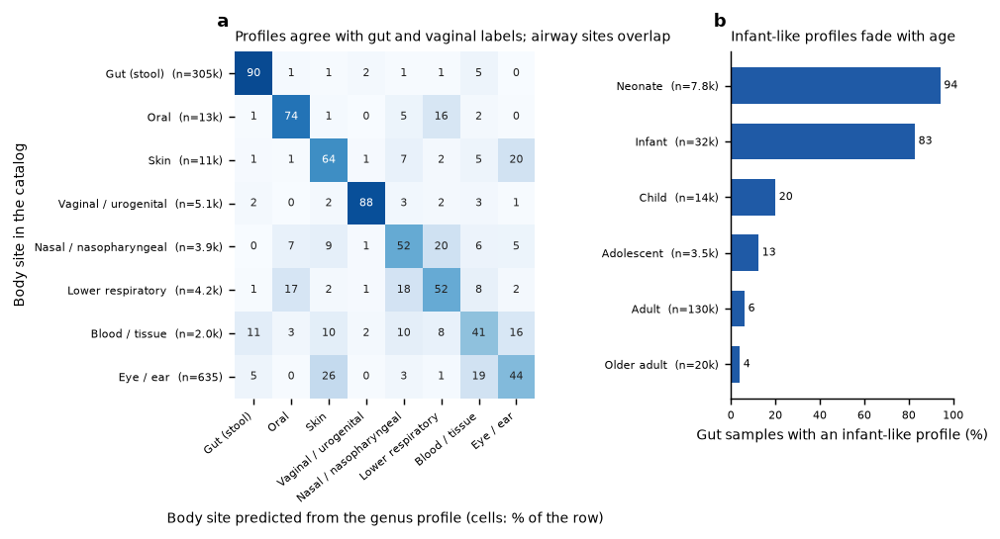

Profile coverage and quality
Four measures on the join between catalog samples and their Sandpiper community profiles (SingleM, GTDB taxonomy; Sandpiper 2.0.1, Zenodo record 21287531), recomputed with every release. Computed on data package 1.35.0 (release R2026.44). Counts use current samples only. QC-flagged profiles are left out of measures 2 and 3. Every table is downloadable in full as CSV.
1. Profiling coverage · 2. Labels versus composition · 3. Known versus unknown community · 4. Depth and quality
1. Profiling coverage
415,757 of 813,356 current samples (51.1 %) have a Sandpiper profile. That is the count the other Insights pages measure their own subsets against. Sandpiper screened archive metagenomes public up to 2026-03-03; runs made public later wait for its next snapshot. Below 0.1 Gbp per run it profiles almost nothing. Above 1 Gbp it profiles about four in five runs; 90,327 DNA runs of at least 1 Gbp, public before the cut-off, have no profile yet (list).
| Status of the sample | Samples | Share |
|---|---|---|
| Profiled, passes QC | 379,851 | 46.7 % |
| Profiled, QC-flagged | 35,906 | 4.4 % |
| Not profiled: every DNA run < 0.1 Gbp | 98,189 | 12.1 % |
| Not profiled: public after Sandpiper's cut-off | 110,727 | 13.6 % |
| Not profiled: reason not known | 159,012 | 19.6 % |
| No DNA run (RNA only) | 29,671 | 3.6 % |
Why a sample has no profile
The table above classifies a sample by its own runs; the one below reports the reason for the single run that came closest to a profile, so the two sets of counts do not add up the same way. For every current sample without a profile, the reason of the run that came closest to one. The reasons come from Sandpiper's two run lists (the runs it profiled, and the runs it selected from the archive) and its published selection rule: Illumina; library source METAGENOMIC or organism a metagenome; more than 1 Gbp, or more than 0.1 Gbp with library selection RANDOM. The catalog does no profiling of its own. Per sample in catalog_sandpiper_unprofiled.parquet.
| Reason | Samples | Projects | Median Gbp per sample |
|---|---|---|---|
| Too small for Sandpiper's selection rule | 120,768 | 1,627 | 0.06 |
| Public after Sandpiper's snapshot | 111,267 | 543 | 3.72 |
| Not sequenced on Illumina | 53,722 | 589 | 2.67 |
| Meets Sandpiper's selection rule, not on its run list | 53,433 | 2,445 | 2.99 |
| RNA only | 27,096 | 334 | 0.81 |
| No public date held for the run | 17,871 | 101 | 1.05 |
| On Sandpiper's run list, no profile released | 10,818 | 754 | 1.53 |
| Sandpiper profiled a run the catalog does not count as a DNA metagenome run | 2,265 | 44 | 1.31 |
| Library source not METAGENOMIC and organism not a metagenome | 324 | 7 | 2.32 |
| No run row held for the sample | 35 | 2 |

Largest unprofiled projects (the five largest; every project is in the CSV below)
| Project | Unprofiled | Samples | Runs < 0.1 Gbp | After cut-off | Not known | No DNA run | Title |
|---|---|---|---|---|---|---|---|
| PRJNA400115 | 12266 | 12266 | 1 | 0 | 12265 | 0 | TEDDY Microbiome |
| PRJNA1460779 | 10003 | 10003 | 0 | 10003 | 0 | 0 | The Vaginal Microbiome as a Reservoir for Uropathogens: A Population-Scale Metagenomic Study of Women Recently Experiencing BV & UTI |
| PRJNA416160 | 8747 | 8747 | 6723 | 0 | 2024 | 0 | The Environmental Determinants of Diabetes in the Young (TEDDY) Parent Study |
| PRJEB11419 | 6462 | 7353 | 3007 | 1005 | 2450 | 0 | American Gut Project |
| PRJNA1468137 | 4749 | 4749 | 0 | 4749 | 0 | 0 | Maternal influences on infant gut microbiome and health |
Full tables: every project · by body site · by year · by country.
2. Labels versus composition
The catalog's body site agrees with the site predicted from the genus profile for 87.9 % of 345,737 labelled, QC-clean samples (63.6 % averaged over sites). The classifier is a multinomial logistic regression on centred log-ratio genus abundances (the genera of the PCA). Each project's samples are scored by a model that never saw that project: five folds, split by project, with at most 150 training samples per project and site. On gut samples, a second model separates infants (exact age under 1 year) from adults (18 years or older). It agrees with exact ages for 94.0 % of 71,897 samples.
A disagreement is a reason to look at a sample, not a correction. Nasal, lower-airway and oral communities overlap. Blood, tissue and eye samples are low-biomass and carry little microbial signal. Older infants already have adult-like communities. Confidently discordant samples (probability ≥ 0.9): 7,033 with another body site's profile, and 1,801 adult or older-adult gut samples with an infant-like profile. A discordant sample is flagged for review; no catalog value is changed on this evidence alone.

Projects with the most discordant samples (the five highest; every project is in the CSV below)
| Project | Other-site profile | Adult with infant-like profile | QC-clean profiled | Share | Most common suggestion | Title |
|---|---|---|---|---|---|---|
| PRJNA553191 | 56 | 0 | 59 | 0.95 | gut_stool | Shotgun metagenomics of human gut microbiota up to extreme longevity and the increasing role of xenobiotics degradation |
| PRJNA915128 | 41 | 0 | 44 | 0.93 | gut_stool | Vaginal microbiota of pregnant women with IBD |
| PRJNA928311 | 0 | 41 | 51 | 0.80 | infant-like | Probiotics supplementation to ileostoma bacterial community cause dynamic increase in their resistance to perturbations and metabolic utilization |
| PRJEB74248 | 30 | 0 | 46 | 0.65 | gut_stool | The OSM and Tear Proteome in Glaucoma Patients |
| PRJNA983093 | 4 | 100 | 177 | 0.59 | infant-like | Bifidobacterium lactis Probio-M8 treated and prevented acute RTI via regulating gut microbiota and metabolites. |
96 projects with at least 20 discordant samples. Full tables: projects · samples · confusion matrix · site suggested for 5,502 samples without a recorded site (suggestions only; not entered in the catalog).
3. Known versus unknown community
Known-species share is the share of a sample's prokaryotic coverage assigned to a named GTDB species. It shows where reference genomes still miss much of the community, and it rises as GTDB and GlobDB grow. Gut samples from Niger (53 %), Gabon (56 %), Haiti (64 %) have the least-described communities. The 10 countries with the most gut samples (led by United States, China, United Kingdom) sit between 85 and 90 %.

| Body site | Samples | Median known-species share |
|---|---|---|
| Vaginal / urogenital | 5,122 | 91.8 % |
| Gut (stool) | 304,338 | 86.7 % |
| Nasal / nasopharyngeal | 4,052 | 76.1 % |
| Skin | 10,697 | 69.7 % |
| Oral | 15,104 | 64.9 % |
| Lower respiratory | 4,269 | 55.6 % |
| Eye / ear | 650 | 44.4 % |
| Blood / tissue | 2,466 | 26.8 % |
Full tables: gut samples by country · by body site · gut samples by lifestyle.
4. Depth and quality
98.5 % of the 415,378 profiled samples with a recorded base count clear Sandpiper's low-depth line (2× summed prokaryotic coverage). The few profiled samples whose runs record no base count are left out here; section 1 counts them. Coverage follows sequencing depth (Spearman ρ = 0.821; median 4.34 Gbp and 984× per sample). It falls well below the line where host DNA dominates: the median prokaryotic share of reads is 0.8 % in blood / tissue samples and 1.1 % in eye / ear samples, against 86 % in gut (stool). QC-flag rates across all profiled samples: low depth 1.5 %, low complexity 5.9 %, non-metagenome organism label 0.9 %, any flag 16.1 %.

Projects with the highest QC-flag rates (at least 50 profiled samples; the five highest, every project is in the CSV below)
| Project | Profiled | Median Gbp | Median coverage (×) | Low depth | Low complexity | Any flag | Title |
|---|---|---|---|---|---|---|---|
| PRJNA1195696 | 71 | 12.18 | 3250.22 | 0.00 | 0.01 | 1.00 | Homo sapiens Raw sequence reads |
| PRJNA961698 | 658 | 6.062 | 1176.13 | 0.00 | 0.02 | 1.00 | Very Early Life Microbiome and Metabolome Correlates with Primary Vaccination Variability in Children |
| PRJNA991269 | 114 | 1.977 | 526.545 | 0.00 | 0.00 | 1.00 | Comparative characterization of the infant gut microbiome and their maternal lineage by a multi-omics approach |
| PRJEB65418 | 62 | 1.271 | 299.23 | 0.00 | 0.00 | 1.00 | Fecal microbiota transplantation in irritable bowel syndrome patients |
| PRJNA615628 | 56 | 1.505 | 684.61 | 0.00 | 0.00 | 1.00 | Cystic fibrosis airway respiratory microbiome Raw sequence reads |
Full table for every project: depth_qc_projects.csv.